Empowering Classrooms Anywhere.
A seamless, peer-to-peer learning platform designed for off-grid environments. Connect, engage, and learn without boundaries.
What exactly is OffGridLink?
A simple explanation for anyone—no tech skills required.
1. No Internet? No Problem.
Imagine a school in a remote village with absolutely zero internet connection. Normally, digital learning would be impossible here.
2. The Teacher's Laptop
The teacher opens the OffGridLink app on their laptop. It instantly creates an invisible, local "Wi-Fi bubble" that covers the entire classroom.
3. Students Connect
Students take out their mobile phones and connect directly to the teacher's bubble. They don't need any cellular data or internet connection at all.
4. The Magic Happens
Now, the teacher can beam live quizzes to every student's phone instantly. When students answer, the teacher sees their scores live. It's a full digital classroom, completely off the grid!
Education Beyond Borders
Millions of students worldwide lack reliable access to the internet. OffGridLink was built to bridge this digital divide by transforming any classroom into a high-speed, interactive digital learning environment—completely offline.
Whether you are in a remote rural village, a disaster recovery zone, or simply facing a network outage, our platform ensures education never stops. The teacher's laptop becomes the heart of the classroom, broadcasting quizzes, sharing heavy media, and syncing progress seamlessly to student devices.
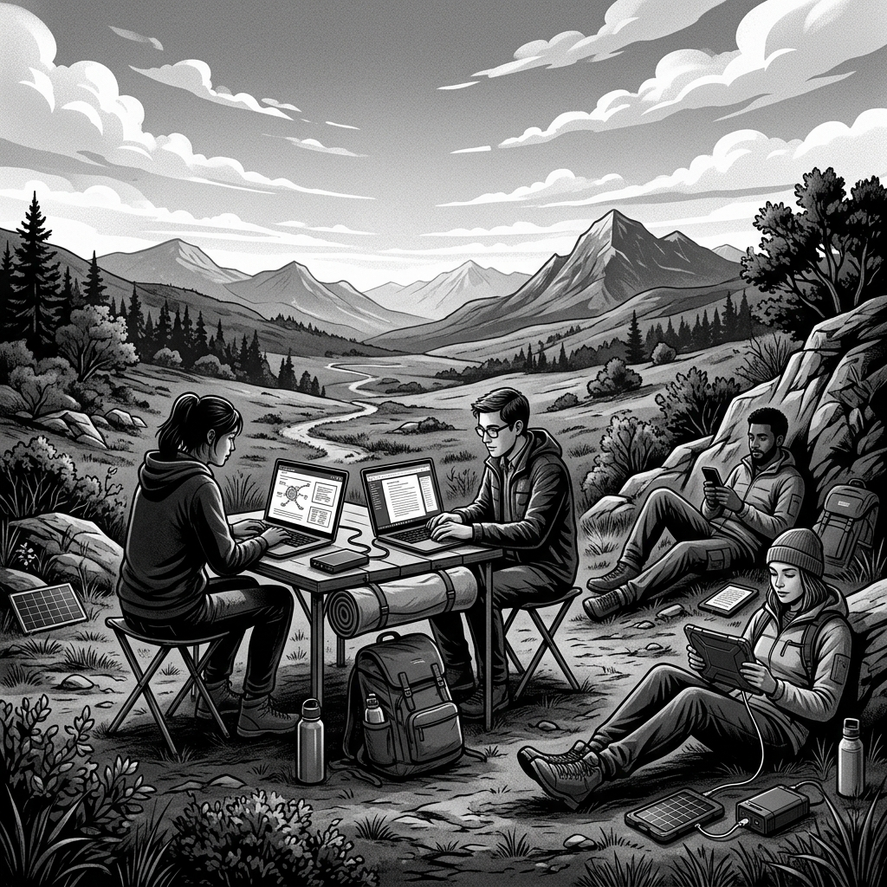
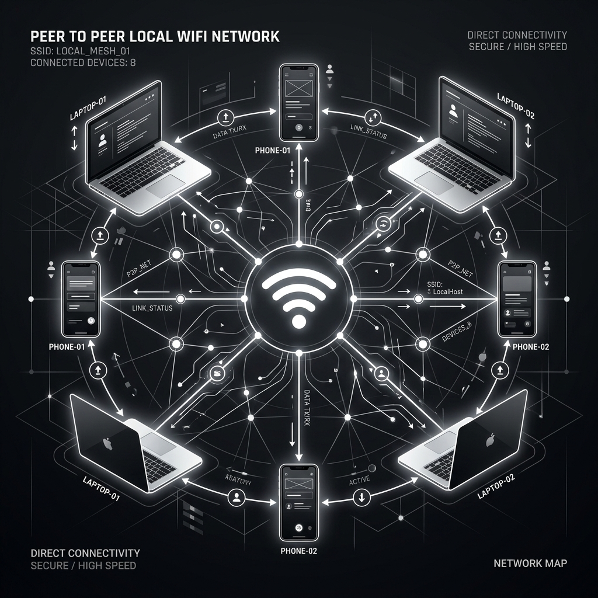
True Peer-to-Peer Architecture
Our proprietary dual-broker system leverages the power of Local Wi-Fi and WebTorrent. Students connect directly to the teacher's hub, forming a resilient mesh network that requires zero external servers.
If the local network fails, our intelligent Cloud Relay fallback kicks in instantly to keep the session alive. This hybrid approach guarantees unprecedented stability and speed, letting educators focus entirely on teaching.
Built for the Modern Classroom
P2P Connectivity
Works seamlessly on local Wi-Fi. Dual-broker system with Cloud fallback ensures you're always connected.
Dynamic Leaderboards
Real-time scoring and live student leaderboards keep the classroom competitive and engaged.
Lightning Fast
Optimized desktop and mobile apps built for fast startup and instant data synchronization.
Premium UI
A sleek, high-contrast modern aesthetic designed for focus and minimal distraction.
How It Works
Teacher Starts the Hub
The educator launches the Teacher Windows Desktop App. It instantly creates a local classroom network, acting as the primary host.
Students Connect via APK
Students open the Android Mobile App. Using our resilient Dual-Broker system, they discover the Teacher's hub over Local Wi-Fi or seamlessly fall back to a Cloud Relay.
Live Quizzes & Leaderboards
Engage the class with real-time quiz synchronization. Scores update dynamically on the projector and student devices, fostering a competitive, fun learning environment.
Interactive Real-Time Quizzes
Bring excitement to the classroom with live, synchronized quizzes. The teacher uses the Desktop App to create and instantly broadcast questions to the entire class.
Students receive the questions in real-time on their Mobile Phones. As they answer, scores are immediately calculated and the dynamic leaderboard updates live on the teacher's screen. It's a completely seamless interactive experience with zero lag, keeping students engaged and competitive.
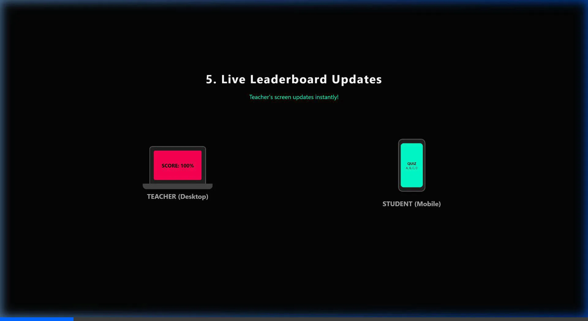
Instant Quiz Synchronization
Forget about slow data transfers or manual grading. OffGridLink is optimized specifically to push interactive quizzes to dozens of student devices instantly over the local network.
The moment the teacher hits "Start", the quiz data is broadcasted to the entire classroom. Our ultra-lightweight syncing engine ensures that even low-end mobile phones receive questions instantly, process answers, and update the live leaderboard without any internet connection.
The Complete System
Teacher Desktop App
A fast, portable Windows executable designed for the modern educator. Built with Electron, it features a sleek dark mode dashboard, complete control over classroom sessions, and instant deployment.

Student Mobile App
A lightweight Android APK customized for mobile accessibility. Features a matching black-and-white UI, manual connection options for stability, and WebTorrent-powered asset sharing for heavy media.
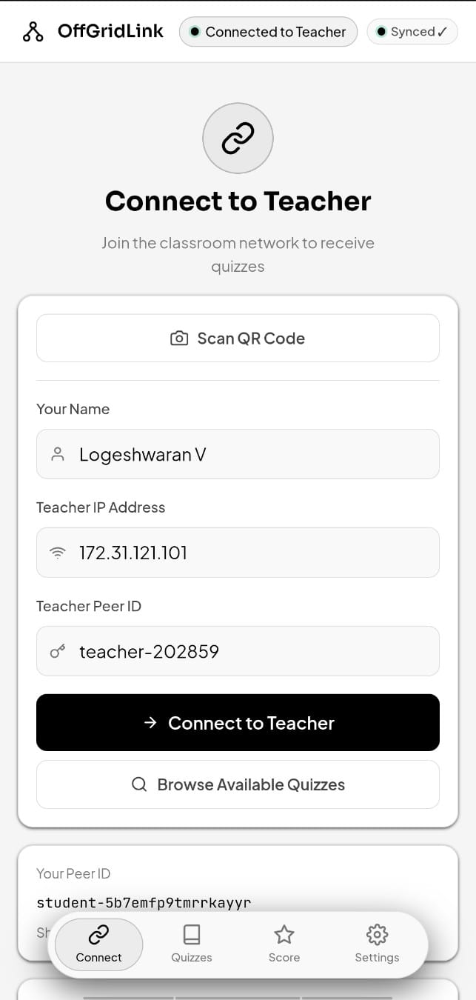
App Gallery
Teacher Desktop App
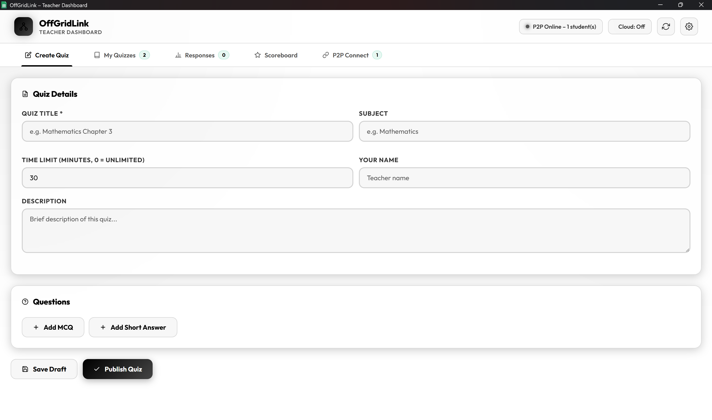
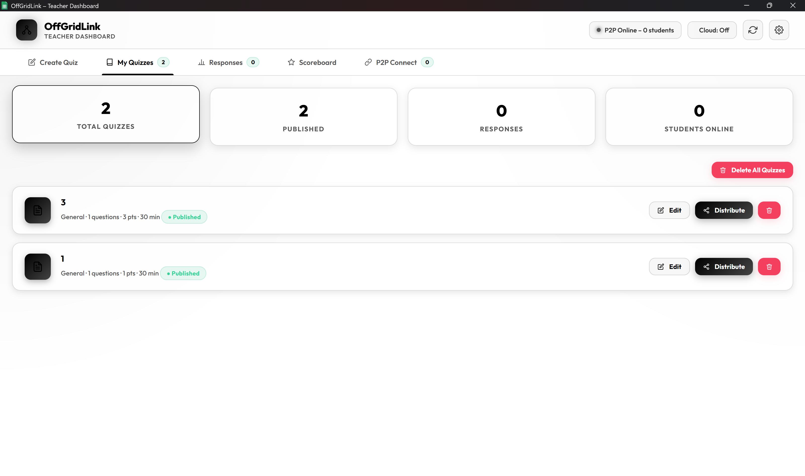
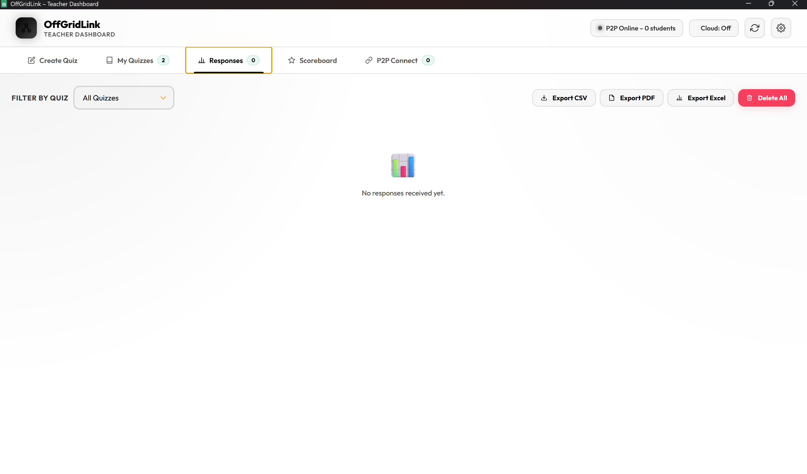
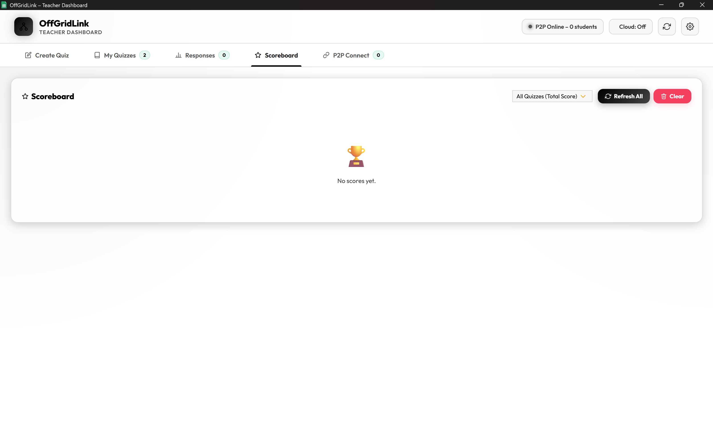
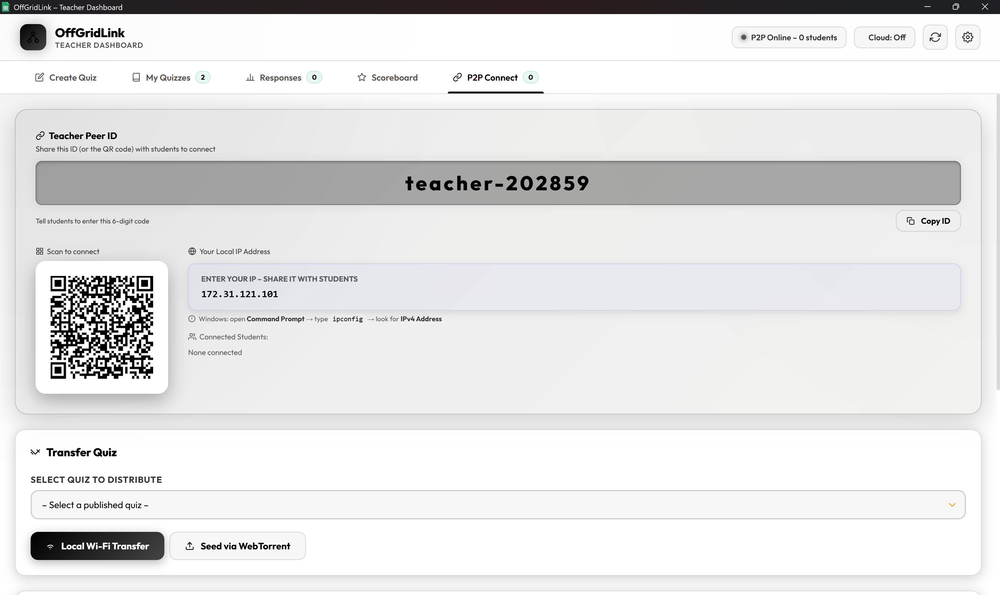
Student Mobile App

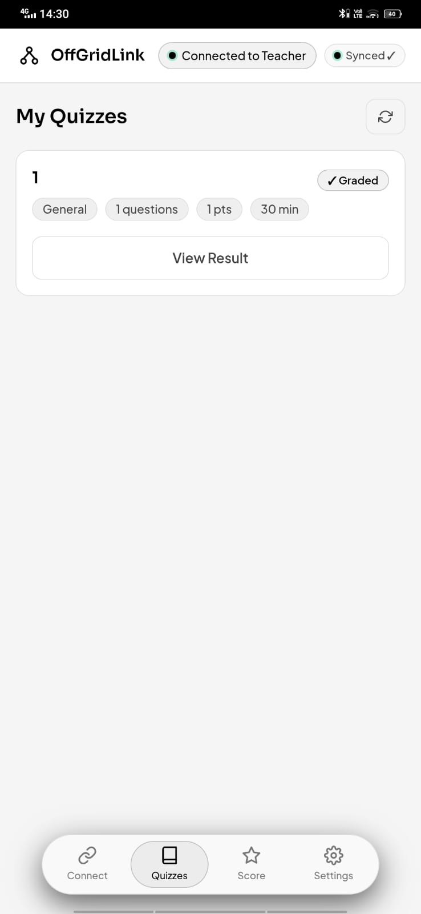
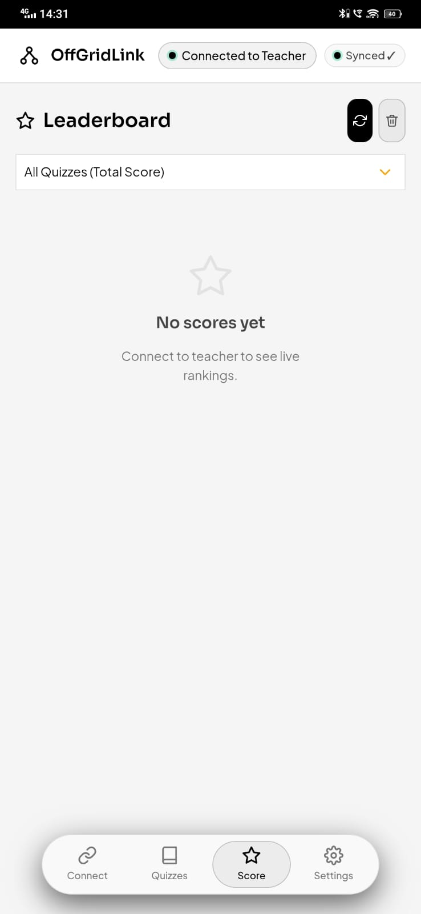
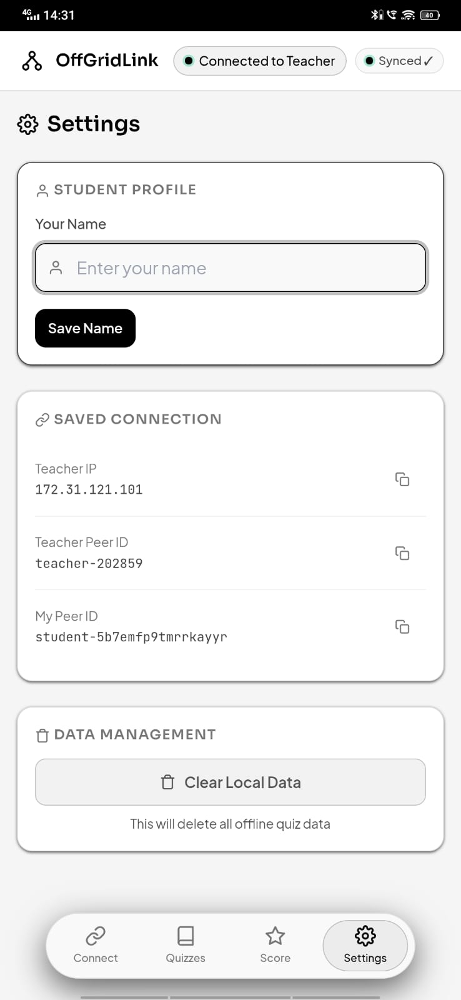
Built with Cutting-Edge Tech
Electron & NSIS
The Teacher dashboard is a robust desktop executable built with Electron and packaged securely with NSIS for hassle-free Windows installations.
Capacitor
The Student APK is wrapped using Capacitor, delivering a native mobile experience while keeping the codebase maintainable and fast.
CouchDB Syncing
Persistent and reliable offline-first data synchronization across devices using robust CouchDB replication.
PeerJS & WebTorrent
Direct peer-to-peer communication using PeerJS, combined with WebTorrent for lightning-fast media and asset sharing without server overload.
Ready to transform your classroom?
Deploy OffGridLink today and experience seamless, offline-ready education.
Get Started Now